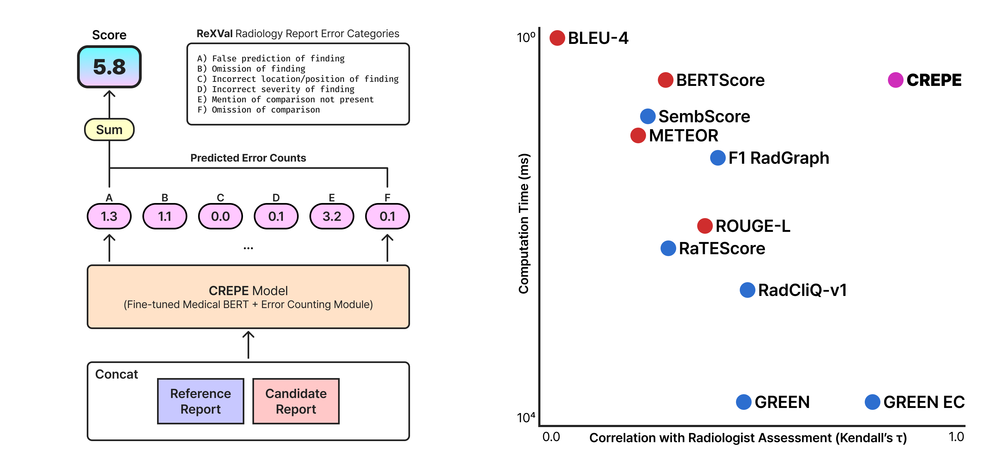
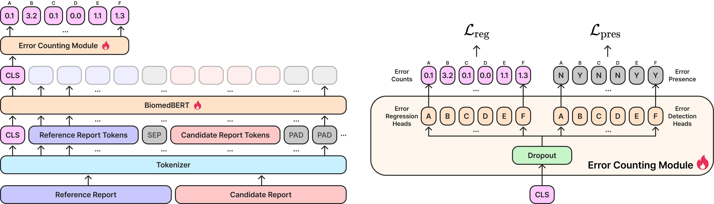
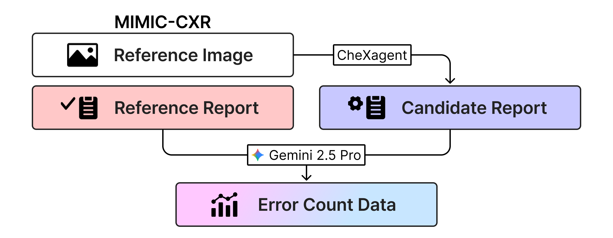
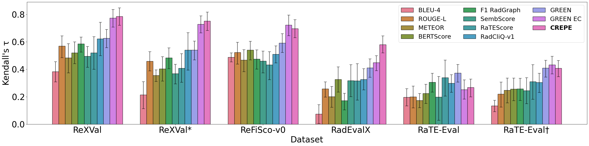
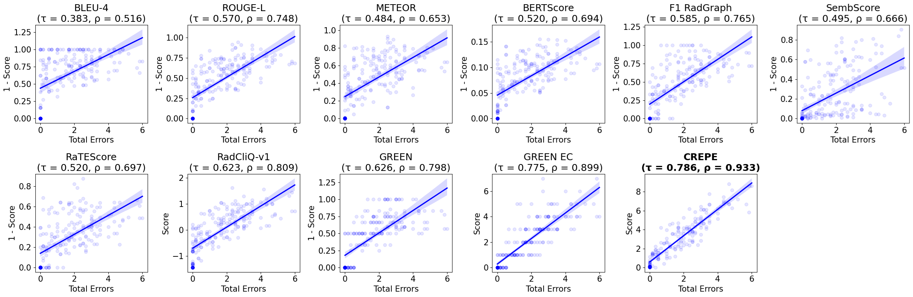

CREPE: Rapid Chest X-ray Report Evaluation by Predicting Multi-category Error Counts
Innovative Radiology AI Laboratory


CREPE is a lightweight, clinically-aware metric for automatic chest X-ray report evaluation. It predicts continuous error counts across six radiology-relevant categories using a BiomedBERT encoder with multi-head regression, then sums them into a single score. Trained on 32k synthetic, rigorously governed report pairs and validated on multiple expert-annotated benchmarks, CREPE aligns strongly with radiologists on ReXVal (Kendall's τ = 0.786) while running in ~9.5 ms per pair—about 280× faster than LLM-based evaluators.
Abstract
We introduce CREPE (Rapid Chest X-ray Report Evaluation by Predicting Multi-category Error Counts), a rapid, interpretable, and clinically grounded metric for automated chest X-ray report generation. CREPE uses a domain-specific BERT model fine-tuned with a multi-head regression architecture to predict error counts across six clinically meaningful categories. Trained on a large-scale synthetic dataset of 32,000 annotated report pairs, CREPE demonstrates strong generalization and interpretability. On the expert-annotated ReXVal dataset, CREPE achieves a Kendall's τ correlation of 0.786 with radiologist error counts, outperforming traditional and recent metrics. CREPE achieves these results with an inference speed approximately 280 times faster than large language model (LLM)-based approaches, enabling rapid and fine-grained evaluation for scalable development of chest X-ray report generation models.
Dual-head model architecture

Given a reference and candidate report, CREPE concatenates them and encodes the pair with BiomedBERT. Six category-specific regression heads estimate continuous error counts for: (A) false finding, (B) omission, (C) wrong location, (D) wrong severity, (E) unmentioned comparison, and (F) missing comparison. During training, auxiliary presence heads help handle class imbalance. At inference, the sum of predicted counts is the CREPE score (lower is better), and the per-category vector provides an interpretable error profile.
Synthetic Report Error Dataset

To train the CREPE model, we constructed a large-scale synthetic dataset using the MIMIC-CXR dataset. Each sample includes a reference image and its corresponding radiologist-written reference report. Using CheXagent, a vision-language foundation model, we generated a candidate report for each image. Then, Gemini 2.5 Pro compared the reference and candidate reports to identify and label error counts across six clinically defined categories (A-F).
Performance and Human Alignment
 
The figures above show the performance of CREPE compared to existing evaluation metrics across multiple benchmark datasets. The top panel reports Kendall's τ correlation with radiologist error counts, where CREPE consistently ranks highest or near-highest across all datasets, demonstrating strong agreement with expert judgments. The bottom panel visualizes the relationship between each metric's score and the total number of radiologist-identified errors in the ReXVal dataset. As shown, CREPE achieves the strongest monotonic correlation (τ = 0.786, ρ = 0.933) while maintaining rapid inference, confirming its effectiveness as a clinically grounded yet efficient evaluation metric for automated chest X-ray report generation.
BibTeX
TBA